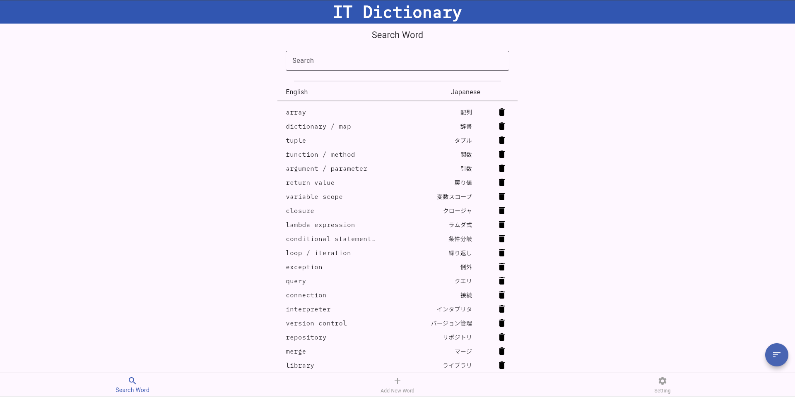
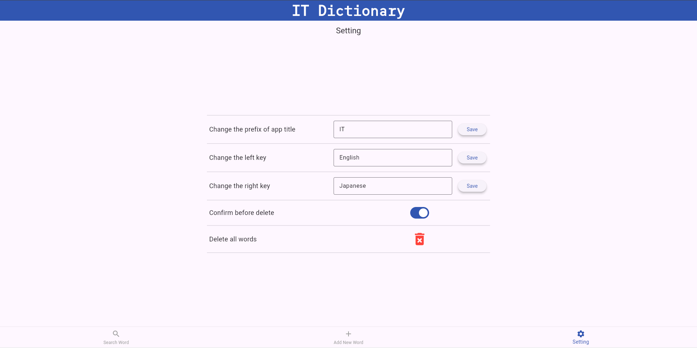
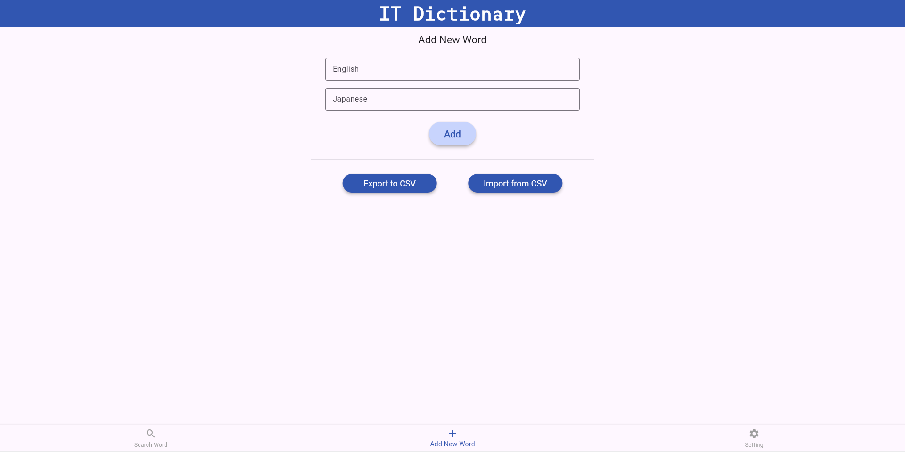

大学2年 / ソフトウェアエンジニア志望
自分で単語を登録してカスタマイズできる辞書です。
サンプルデータとして、デフォルトでIT用語の日本語・英語のセットが入っています。

検索画面

設定画面

単語追加画面
プログラミングを学習する過程で、英語の公式ドキュメントや技術記事を読む際、 専門用語の翻訳に不便さを感じたことがきっかけです。
ITをはじめとする専門技術の用語は、日本語と英語で実質的に一対一で対応している一方、 一般的な辞書や検索結果では正確に訳せないことが多々あります。 そこで、自分でカスタマイズできる一対一参照の辞書があれば有用であると考え、制作に至りました。
また、技術選定については、アルバイトでFlutterを使用する予定があり、学習を兼ねて採用しました。
FlutterによるUI構築の習得にとどまらず、保守性や拡張性を意識して設計・実装を行いました。 自己説明的かつ体系化された命名を心掛け、後から読んでも設計が把握できる構成を意識しました。
また、UIのコンポーネント化を適切に行い、責務を明確に分割することで再利用性を高めました。 さらに、ファイル・フォルダ構成を整理し、機能追加や修正が容易になるよう工夫しました。